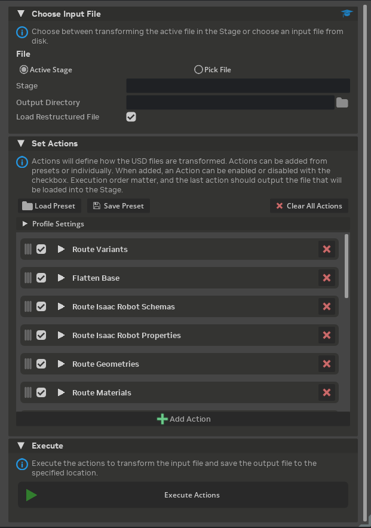
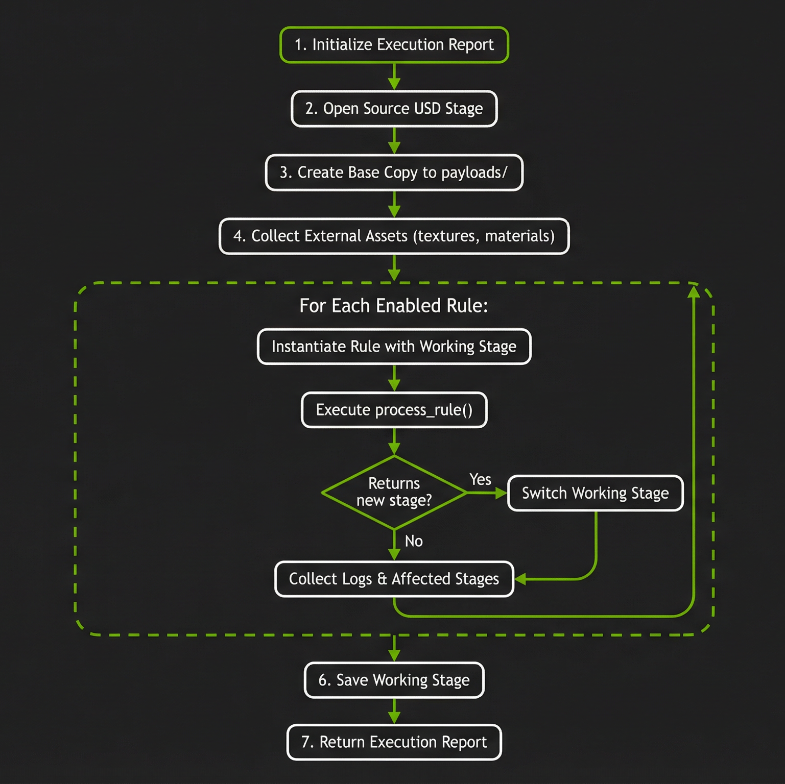

Asset Transformer#
Asset Transformer는 Isaac Sim에서 USD 에셋을 변환하는 프레임워크입니다. 배치 변환, 스키마 라우팅, 메시 중복 제거, 재질 최적화, 구조 재편성을 위한 유틸리티를 제공합니다. 변환기는 규칙 기반 파이프라인을 통해 작동하며, 각 규칙은 USD 스테이지에서 특정 변환을 수행하여 복잡한 다단계 에셋 최적화 워크플로우를 가능하게 합니다.

다음 섹션은 Asset Transformer의 각 부분에 대한 UI와 기능을 설명합니다. 단계별 실습 예시는 Asset Transformer 튜토리얼을 참고하세요.
Purpose#
Asset Transformer는 시뮬레이션을 위한 에셋 준비 시 주요 과제를 해결합니다:
스키마 분리: 모듈성을 위해 물리, 로봇 및 기타 API 스키마를 전용 레이어로 추출합니다.
성능 최적화: 메모리 사용량을 줄이고 렌더링 성능을 향상시키기 위해 지오메트리와 재질을 중복 제거합니다.
구조 재편성: 복잡한 계층 구조를 평탄화하고, 변형 세트를 라우팅하며, 표준화된 에셋 구조를 생성합니다.
컴포지션 설정: 적절한 USD 컴포지션 아크(references, payloads, sublayers)를 포함하는 인터페이스 레이어를 생성합니다.
결과는 Isaac Sim 에셋 구조 가이드라인을 따르는 모듈식 시뮬레이션 준비 에셋 구조입니다.
관련 문서:
Asset Transformer 튜토리얼 - 단계별 실습 예시
Asset Transformer 규칙 참조 - 사용 가능한 변환 규칙의 전체 참조
Asset Transformer API - 프로그래밍 방식 사용법 및 커스텀 규칙 개발
Opening the Asset Transformer#
Asset Transformer UI는 메뉴 바에서 접근할 수 있습니다: Tools > Robotics > Asset Editors > Asset Transformer.
User Interface#
{kind=link}

창에는 세 가지 주요 섹션이 있습니다. 각 섹션은 변환 워크플로우의 단계를 제어합니다: 입력 선택, 액션 구성, 파이프라인 실행.
Input Section#
소스 에셋과 출력 위치를 구성합니다:
Active Stage / Pick File: 현재 열린 스테이지를 변환할지 또는 디스크에서 파일을 선택할지 결정합니다.
Output Directory: 변환된 에셋 패키지의 대상 폴더입니다.
Load Restructured File: 실행 후 출력 파일을 자동으로 엽니다.
Actions Section#
변환 파이프라인을 구성합니다:
Load Preset: JSON 파일에서 저장된 규칙 프로파일을 불러옵니다. 최근 프리셋은 빠른 접근 메뉴에 표시됩니다.
Save Preset: 현재 구성을 JSON 프리셋 파일로 저장합니다.
Clear All Actions: 액션 목록에서 모든 규칙을 제거합니다.
Profile Settings (접을 수 있음): 프로파일 메타데이터를 구성합니다:
Profile Name: 프로파일의 표시 이름
Version: 버전 문자열
Interface Asset: 출력 인터페이스 에셋 이름
Base Name: 베이스 스테이지 파일명
Flatten Source: 처리 전 소스 스테이지 평탄화 여부
Action List: 실행할 규칙의 순서 목록. 각 액션 행에 표시되는 항목:
순서 변경을 위한 드래그 핸들
활성화/비활성화 체크박스
구성 표시를 위한 확장 삼각형
규칙 이름
제거 버튼
Add Action: 파이프라인에 새 규칙을 추가합니다. 사용 가능한 규칙은 Asset Transformer 규칙 참조를 확인하세요.
액션을 확장하면 다음 구성 옵션이 나타납니다:
Rule Type: 규칙 구현을 선택하는 검색 가능한 드롭다운. 드롭다운은 Rule Name 열에 짧은 클래스 이름으로, Package 열에 범위별로 규칙을 묶어 나열합니다.
Destination: 규칙의 출력 경로(패키지 루트에서 상대 경로).
Parameters: 규칙의 구성 매개변수에서 생성된 동적 매개변수 편집기.
Note
Rule Type 드롭다운은 짧은 클래스 이름(예: SchemaRoutingRule)을 표시하지만, 문서와 저장된 프로파일은 완전한 정규화 타입으로 규칙을 식별합니다. 정규화 타입은 Package 열의 범위와 클래스 이름을 결합합니다: isaacsim.asset.transformer.rules.<package>.<module>.<ClassName>. 예를 들어 Package core의 Rule Name SchemaRoutingRule은 isaacsim.asset.transformer.rules.core.schemas.SchemaRoutingRule에 해당합니다.
검색 필드 옆의 필터 아이콘을 사용하여 선택한 패키지(core, perf, structure, isaac_sim)의 규칙만 표시합니다. 각 규칙의 정규화 타입은 Asset Transformer 규칙 참조를 확인하세요.
Execute Section#
Execute Actions: 변환 파이프라인을 실행합니다. 하나 이상의 액션이 활성화되고 출력 디렉토리가 설정된 경우 버튼이 활성화됩니다.
Transformer Manager Process#
AssetTransformerManager는 USD 스테이지에서 규칙 프로파일 실행을 조율합니다.
{kind=link}

처리 흐름:
초기화: 결과를 추적하기 위한 실행 보고서를 생성합니다.
소스 스테이지 열기: 지정된 경로에서 입력 USD 스테이지를 로드합니다.
베이스 복사본 생성: 소스 스테이지를
{package_root}/payloads/{base_name}으로 내보냅니다.flatten_source가 활성화된 경우 먼저 스테이지를 평탄화합니다.외부 에셋 수집: 외부 에셋(텍스처, 재질)을
{package_root}/source_assets/에 복사하고 경로를 로컬 참조로 업데이트합니다.규칙 실행: 프로파일의 각 활성화된 규칙에 대해:
작업 스테이지로 규칙을 인스턴스화
process_rule()실행규칙이 새 스테이지 경로를 반환하면 이후 규칙에서 해당 스테이지로 전환
작업 로그 및 영향 받은 스테이지 수집
작업 스테이지 저장: 루트 레이어의 저장되지 않은 변경 사항을 저장합니다.
보고서 반환: 규칙별 로그와 상태를 포함한 실행 보고서를 생성합니다.
Note
Asset Transformer는 원자적 에셋(다른 에셋으로 구성되지 않거나 외부 참조가 없는 에셋)과 함께 사용하도록 설계되었습니다. 에셋이 다른 에셋으로 구성되거나 외부 참조가 있는 경우, Asset Transformer는 외부 에셋을 수집하여 출력 패키지에 포함합니다.
예시:
에셋이 베이스 에셋과 보조 에셋으로 구성된 경우 (로봇과 그리퍼 또는 센서).
베이스 에셋이 원자적 에셋입니다.
Asset Transformer는 참조된 에셋(그리퍼 또는 센서)을 수집하여 출력 패키지에 포함합니다.
출력 패키지에는 베이스 에셋과 하나의 새로운 원자적 에셋에 포함된 참조 에셋이 담깁니다.
보조 에셋이 변형 세트에서 로드된 경우 새 원자적 에셋의 변형 구조에 포함됩니다.
Rule Profiles#
규칙 프로파일은 완전한 변환 파이프라인을 정의합니다. 프로파일은 다음 구조의 JSON 파일로 저장됩니다:
{
"profile_name": "My Profile",
"version": "1.0",
"rules": [
{
"name": "Rule Display Name",
"type": "fully.qualified.rule.ClassName",
"destination": "output/path",
"params": {
"param_name": "value"
},
"enabled": true
}
],
"interface_asset_name": "asset",
"output_package_root": "/path/to/output",
"flatten_source": false,
"base_name": "base.usd"
}
프로파일 필드:
필드 |
설명 |
|---|---|
|
프로파일의 표시 이름 (필수) |
|
버전 문자열 |
|
규칙 사양의 순서 목록 |
|
출력 인터페이스 에셋 식별자 |
|
기본 출력 디렉토리 |
|
처리 전 소스 스테이지 평탄화 여부 |
|
베이스 스테이지 파일명 |
규칙 사양 필드:
필드 |
설명 |
|---|---|
|
규칙의 표시 이름 (필수) |
|
완전한 정규화 규칙 클래스 이름 (필수). Asset Transformer 규칙 참조를 확인하세요. |
|
패키지 루트에서 상대적인 출력 경로 |
|
매개변수 재정의 딕셔너리 |
|
규칙의 활성화 여부 |
Managing Profiles#
프로파일 불러오기:
Actions 섹션에서 Load Preset 버튼을 클릭합니다.
최근 프리셋 메뉴에서 프리셋을 선택하거나 Browse…를 선택하여 파일 선택기를 엽니다.
프로파일이 로드되고 액션 목록에 반영됩니다.
프로파일 저장하기:
원하는 규칙과 매개변수를 구성합니다.
Save Preset 버튼을 클릭합니다.
파일 선택기에서 파일명과 위치를 선택합니다.
프로파일이 JSON으로 저장되고 최근 프리셋에 추가됩니다.
프로파일 편집하기:
Profile Settings 프레임을 확장하여 메타데이터를 편집합니다.
개별 규칙을 확장하여 매개변수를 수정합니다.
규칙을 드래그하여 실행 순서를 변경합니다.
체크박스를 사용하여 규칙을 활성화 또는 비활성화합니다.
Save Preset을 사용하여 수정된 프로파일을 저장합니다.
Transform Report#
Asset Transformer는 변환 과정에서 수행된 모든 작업을 문서화하는 포괄적인 실행 보고서를 생성합니다. 이 보고서는 출력 패키지 루트 디렉토리에 transform_report.json으로 저장됩니다.
Report Structure#
실행 보고서에는 다음 정보가 포함됩니다:
최상위 필드:
필드 |
설명 |
|---|---|
|
변환에 사용된 전체 프로파일 구성 |
|
원본 입력 USD 스테이지 경로 |
|
변환된 에셋이 기록되는 출력 디렉토리 |
|
실행 시작 시 ISO 8601 타임스탬프 |
|
실행 완료 시 ISO 8601 타임스탬프 |
|
규칙별 실행 결과 배열 |
|
최종 변환된 에셋 경로 |
규칙별 결과:
각 규칙의 실행 결과에 포함되는 항목:
필드 |
설명 |
|---|---|
|
규칙 사양(이름, 타입, 매개변수, 활성화 상태) |
|
규칙이 성공적으로 완료되었는지 나타내는 불린 값 |
|
규칙 실행 중 기록된 로그 항목 배열 |
|
규칙에 의해 생성 또는 수정된 USD 레이어 식별자 목록 |
|
규칙 실패 시 오류 메시지 (성공 시 null) |
|
규칙 시작 타임스탬프 |
|
규칙 완료 타임스탬프 |
Example Report
{
"profile": {
"profile_name": "Isaac Sim Structure",
"version": "1.0",
"rules": ["...truncated..."]
},
"input_stage": "/path/to/robot.usd",
"package_root": "/output/robot_package",
"started_at": "2024-01-15T10:30:00.000Z",
"finished_at": "2024-01-15T10:30:45.123Z",
"output_stage_path": "/output/robot_package/robot.usda",
"results": [
{
"rule": {
"name": "Route Physics Schemas",
"type": "isaacsim.asset.transformer.rules.core.schemas.SchemaRoutingRule",
"destination": "payloads/Physics",
"params": {"schemas": ["Physics*"], "stage_name": "physics.usda"},
"enabled": true
},
"success": true,
"log": [
{"message": "SchemaRoutingRule start destination=payloads/Physics/physics.usda"},
{"message": "Schema patterns: Physics*"},
{"message": "Using schemas layer: /output/robot_package/payloads/Physics/physics.usda"},
{"message": "Moved 3 schema(s) from /World/Robot: PhysicsArticulationRootAPI, PhysicsRigidBodyAPI, PhysicsMassAPI"},
{"message": "Processed 15 prim(s), moved 42 schema instance(s)"},
{"message": "SchemaRoutingRule completed"}
],
"affected_stages": ["payloads/Physics/physics.usda"],
"error": null,
"started_at": "2024-01-15T10:30:05.000Z",
"finished_at": "2024-01-15T10:30:08.500Z"
}
]
}
Using the Report#
변환 보고서는 여러 목적으로 활용됩니다:
디버깅: 로그 항목과 오류 메시지를 검토하여 실패한 규칙과 그 이유를 파악합니다
감사: 에셋에 적용된 변환 내용을 정확히 검토합니다
검증: 예상되는 스키마, 속성 또는 prim이 올바른 레이어로 라우팅되었는지 확인합니다
자동화: CI/CD 파이프라인에서 변환 결과를 검증하기 위해 보고서를 프로그래밍 방식으로 파싱합니다
보고서에 프로그래밍 방식으로 접근하려면 Asset Transformer API를 참조하세요.
Isaac Sim Asset Structure Profile#
Isaac Sim에는 권장 Isaac Sim 에셋 구조로 에셋을 변환하는 Isaac Sim Structure라는 기본 프로파일이 포함되어 있습니다. 이 프로파일은 최근 프리셋 메뉴에서 자동으로 사용할 수 있습니다.

이 프로파일은 다음 변환 파이프라인을 실행합니다:
Route Variants: 변형 세트를 별도의 파일로 추출하며,
none,default,physx변형은 제외합니다.Flatten Base: 특정 변형 선택(예: Physics: PhysX)으로 평탄화된 베이스 스테이지를 생성합니다.
Route Isaac Robot Schemas: Isaac 로봇 스키마(
IsaacRobotAPI,IsaacLinkAPI,IsaacJointAPI)를robot.usda로 이동합니다.Route Isaac Robot Properties: Isaac 로봇 속성을
robot.usda로 이동합니다.Route Geometries: 지오메트리를 중복 제거하고
geometries.usd와instances.usda에 인스턴스 참조를 생성합니다.Fix Physics Joint Poses: 지오메트리 라우팅 단계에서 부모/자식 변환을 결합하여 무효화될 수 있는 물리 조인트 로컬 포즈(
localPos0/1,localRot0/1)를 수정합니다.Route Materials: 시각적 재질을 중복 제거하고 텍스처를 다운로드하며
materials.usda를 생성합니다. 물리 재질(PhysicsMaterialAPI가 있는 것)은 베이스 레이어에 남습니다.Route PhysX Schemas: PhysX 스키마를
Physics/physx.usda로 이동합니다.Route MuJoCo Schemas/Prims/Properties: MuJoCo 관련 의견을
Physics/mujoco.usda로 이동합니다.Route Physics Schemas/Prims: 일반 물리 스키마와 prim을
Physics/physics.usda로 이동합니다.Make Robot Schema: Isaac Sim 로봇 스키마를 적용하고 로봇 관계를 설정합니다.
Make API Schemas Non-Explicit: 명시적 apiSchemas 목록을 prepended 목록 연산으로 변환합니다.
Generate Interface: 다음을 포함하는 최종 인터페이스 레이어를 생성합니다:
베이스 레이어에 대한 참조
폴더 구조에서 생성된 변형 세트
물리 엔진에 대한 서브레이어 연결 (PhysX, MuJoCo)
기본 변형 선택
인터페이스 레이어에서 구성된 스테이지에서 계속 접근할 수 있도록 베이스 레이어의 불필요한 루트 수준 prim(예:
Render, 카메라 정의)을 복구
출력 구조:
결과 출력은 에셋 구조에 문서화된 모듈식 에셋 구조를 따르며 다음을 포함합니다:
payloads/base.usd의 베이스 지오메트리와 계층 구조payloads/robot.usda의 로봇 스키마payloads/geometries.usd의 중복 제거된 지오메트리payloads/materials.usda와payloads/Textures/의 재질 및 텍스처payloads/Physics/의 물리 레이어개별 파일의 변형 옵션
인터페이스 레이어의 최종 구성된 에셋